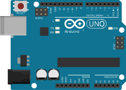
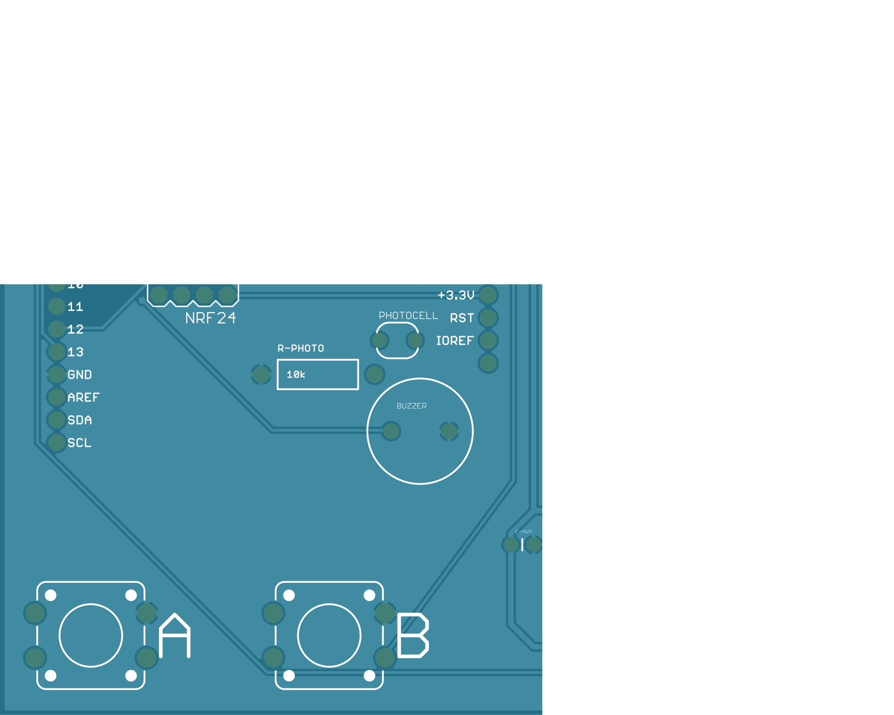
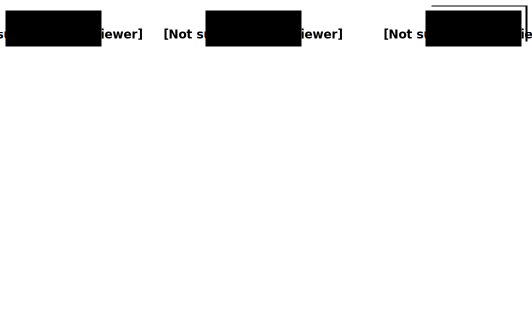
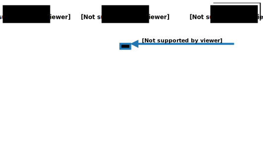
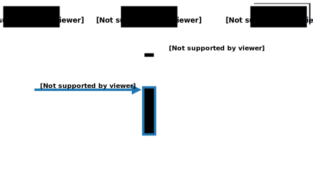
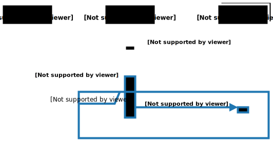
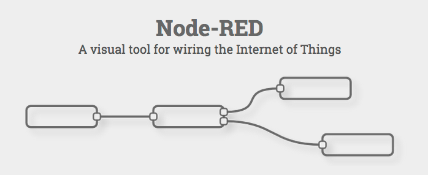

Wiring the Internet of Things
Geek Gathering #7 February 2015
After a short introduction into MQTT and Node-RED we will use an Arduino combined with an “IoT Shield” to prototype some IoT gadgets.
4 ·
+  + 
| {{team.teamId}} |
|
|
| {{team.teamId}} |

MQTT is a machine-to-machine (M2M)/"Internet of Things" connectivity protocol. It was designed as an extremely lightweight publish/subscribe messaging transport. It is useful for connections with remote locations where a small code footprint is required and/or network bandwidth is at a premium.
publish/subscribe messaging

publish/subscribe messaging

publish/subscribe messaging

publish/subscribe messaging

topic
key that identifies the information channel to which payload data is published
hierarchy structure very much like the Filesystem Hierarchy
GG/Iot/1/Temperature
GG/Iot/1/Humidity
GG/Iot/1/Button/A
GG/Iot/1/Button/B
GG/Iot/2/Temperature
GG/Iot/2/Humidity
GG/Iot/2/Button/A
GG/Iot/2/Button/B
topic wildcards
| # | + |
|---|---|
|
|

var client = new Paho.MQTT.Client(...);
client.subscribe("GG/SlideController/WiringIoT/Command");
client.onMessageArrived = function(message) {
switch(message.payloadString) {
case 'next' : deck.next(); break;
case 'prev' : deck.prev(); break;
}
};


{{team.teamId}} |
https://iotteam{{team.teamId}}.azurewebsites.net |
used services
- shiftr.io - really cool publish/subscribe communication infrastructure service used as MQTT Broker.
- Azure Websites - used to host the Node-RED instance.